The high-level goal of this project was to write a system capable of rendering fractals (never-ending patterns based on mathematical equations) in real time. Our team found these types of complex patterns to be very visually appealing and mesmerizing to look at; furthermore, we wanted to explore real-time rendering, where we could continually generate a scene as we move the camera around. We decided to use Unity since it provided a nice starting point for real-time rendering, as this is the type of rendering that is done in most video games. Using the ray marching algorithm, signed distance functions (SDFs), and various visual effects (both lighting and coloring), we were able to create a graphics system that can render any fractal pattern given its SDF. The final product allows you to configure the desired SDF in the code, and then interact with the scene by moving the camera around to view the beautiful and hypnotizing fractal from any angle or distance.
The ray marcher does not use traditional ray-primitive intersection functions like a ray tracer does, so we need to use Signed Distance Functions (SDFs) to tell our ray marcher whether a ray intersects with a primitive. All fractals we rendered in the scene are defined by SDFs. SDFs function similarly to implicit geometry, as they return the closest distance from a ray to the surface of an object. We can leverage the fact that fractals have known SDFs to render very detailed geometries for relatively little computational cost, as each ray will only have to do one call to the SDF per step of the ray march instead of potentially millions of triangle intersection tests in a ray tracer. SDFs are great for our tasks because they have many interesting properties that we can leverage to easily create highly complex geometries. We can union, intersection, and subtract different shapes to create more complex ones. We can also infinitely repeat shapes using modulo and reflect shapes across different planes. One example of use union and subtraction to create new objects can be shown in the following picture.
|
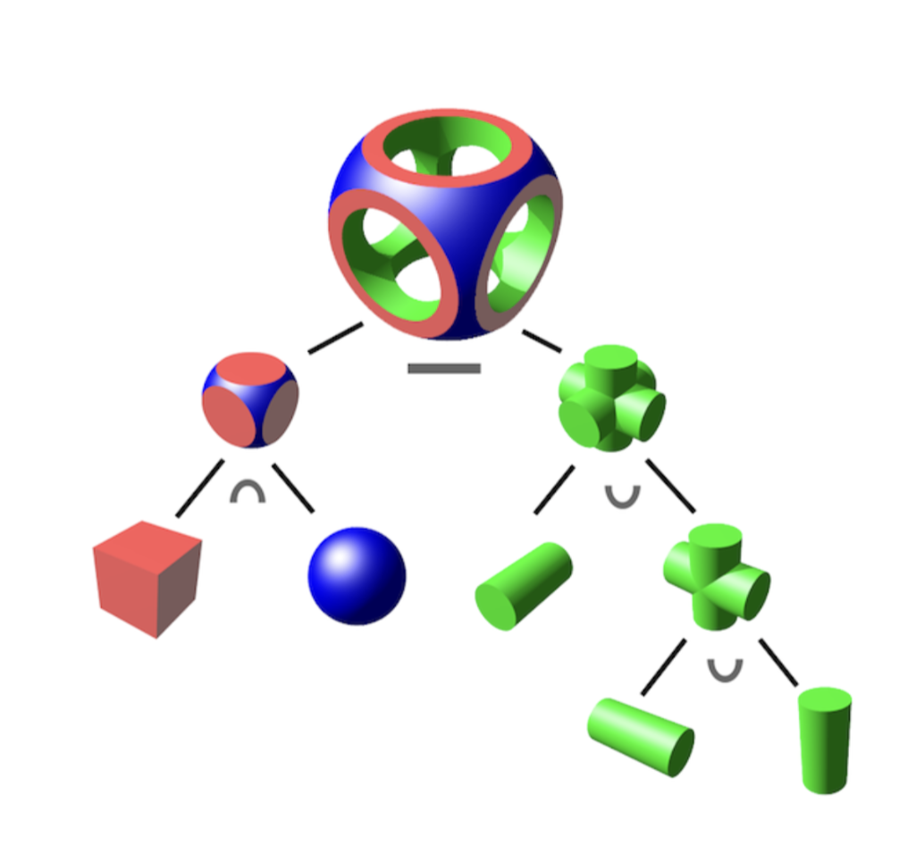
|
Since fractals are quite complex shapes, we decided to use the ray marcher algorithm instead of the ray tracing algorithm we learned in class. To do that, we self-learned how to implement the ray marcher algorithm and used it to render a sphere and a cube. The big idea of ray marcher is that every object is defined using a signed distance function. So, instead of intersecting with shapes multiple times, at every step, we find the closest point from the current position to the object, and then advance that much distance in the direction of the ray until we are close to the object. We check whether we are close to the object by calculating whether the distance is small or not.
Since rays were only marched for a set maximum distance to improve performance, the scene cut off in an abrupt way once the camera moved far away enough from the primitives.
|
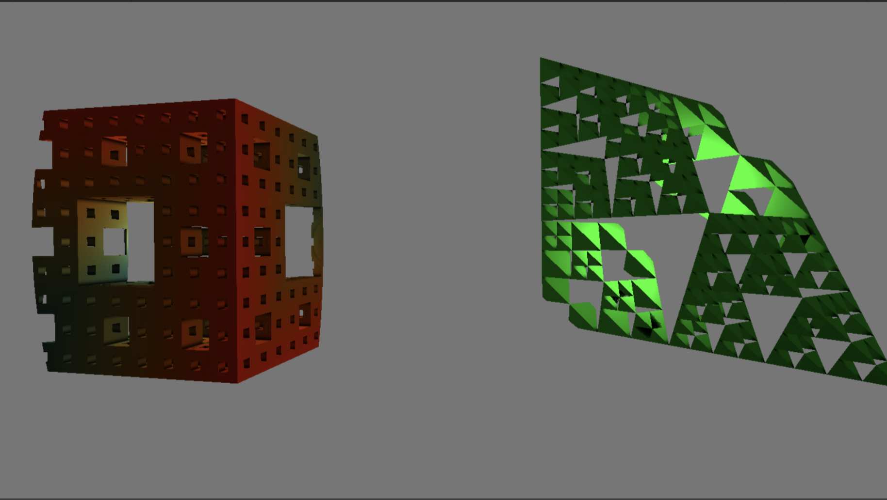
|
To fix this, we implemented a fog effect by linearly interpolating between the color of the primitives with the background color with the distance traveled by the ray as our interpolation parameter.
|
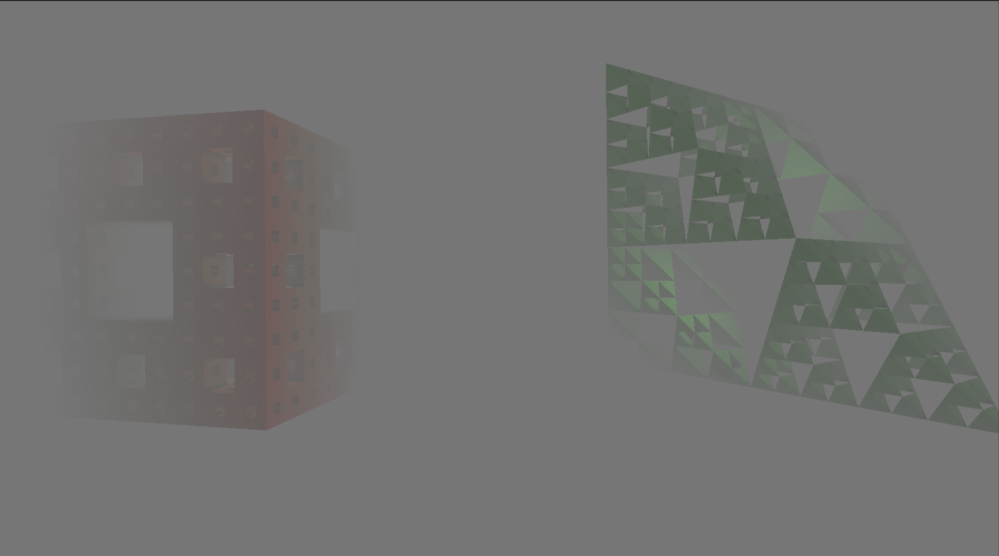
|
|
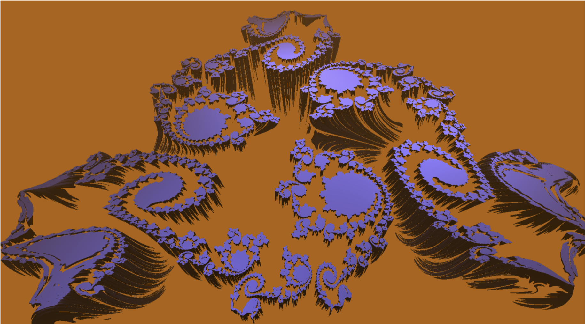
|
|
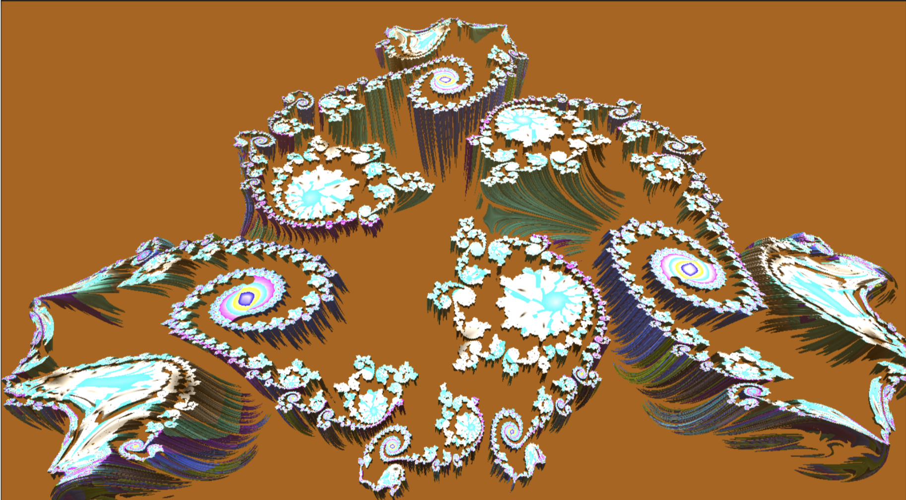
|
Orbit trapping is a method of coloring fractals. Fractal SDFs are usually constructed by iteratively applying some function repeatedly to some shape or point. Orbit trapping works by keeping track of the minimum distance between this point and some arbitrary function. This minimum distance is then used to compute the color. This “traps” the point in a shape defined by the function, which gives rise to interesting patterns based on the shape of the function. How you choose the arbitrary function and how you choose to use the distance to color the final result is up to artistic preference.
For computing the Phong shading model, we found the value of the ambient, diffuse, and specular lighting, and added them
together to get the output. We then use these in the phong shading function by iterating through the lights in the scene, and
calculating the diffuse and specular shading for each light, and adding it to output, which starts as ka (ambient light). We
compute diffuse and specular shading using the two formulas from class as well, given from the lectures. Namely, diffuse
lighting is calculated by using kd * (lightIntensity / (r * r)) * max(0, dot(n, l)) and specular lighting is calculated by
using ks * (lightIntensity / (r * r)) * pow(max(0, dot(n, h)), power) The Phong shading value is used as a scalar for the
sfinal color (i.e. finalColor *= phongValue). An example of phong shading in action is seen below.
|
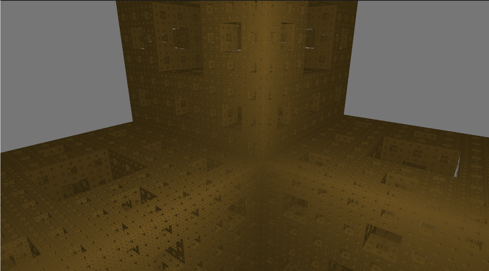
|
We scaled the final color by the value we get from the Ambient Occlusion calculation, similar to the Phong shading.
When calculating the Ambient Occlusion, we iterate over some constant number of steps (5 in our case) along a ray normal to
the intersection point. For each step, we compute pow(numSteps * stepDist - sceneSDF(intersection + normal * numSteps * stepDist), 2) / numSteps.
At the end we raise the occlusion factor to the power we passed into the function. Intuitively, this formula is computing
the sceneSDF and checking if rays in the normal direction are occluded by other primitives. We then subtract this amount from
the occlusion factor, which starts at 1.0.
|
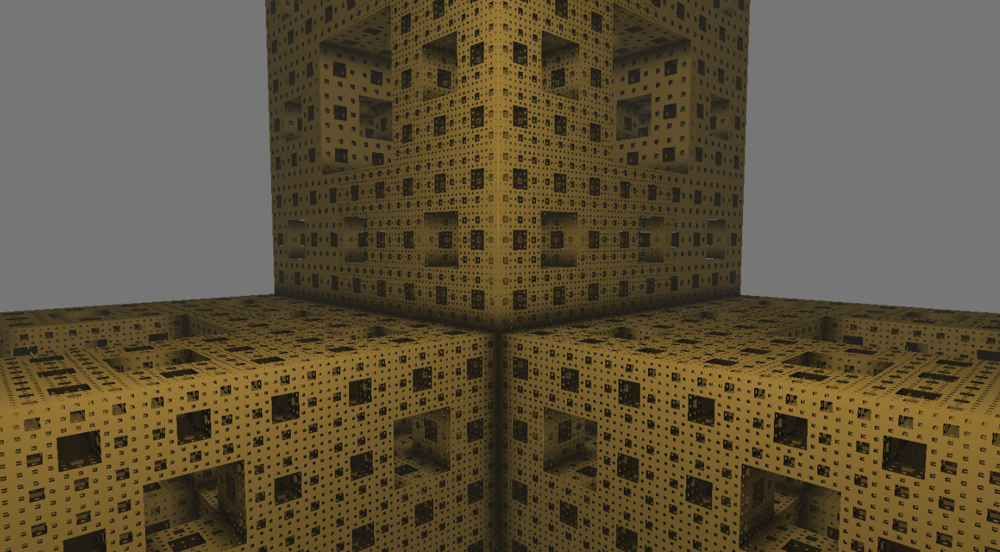
|
|
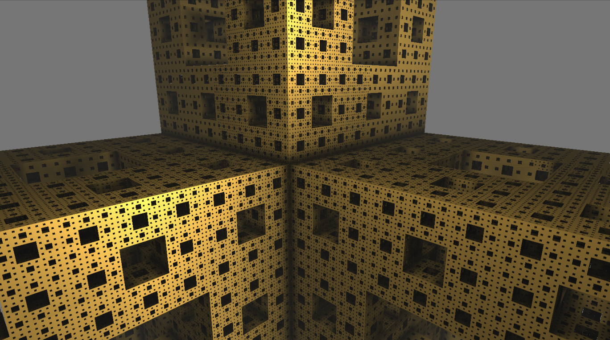
|
Adding shadows in ray marching is similar to adding shadows in ray tracing. We fire rays from the intersection point of the camera rays and the primitives in the scene towards the light in the scene, and step along the ray, checking for intersections along the way. If the ray from the intersection point to the light intersects with an object, it must be occluded, so we apply a shadow to that point.
We have access to the _Time variable in Unity, which represents the time passed since the scene started. On every iteration
in the SDF of these fractals, we took the sine of the current time to let our animation smoothly oscillate. We can add time as a parameter
to anything in the SDF, including scale, position, rotation, and even color. This allows use to create 3D fractals that smoothly shift
and turn over time.
|
|
Our very first bug was that our raymarcher was rendering just a black screen. We suspected this was a bug in our function that generates camera rays. Because shaders do not have access to a debugger or to print statements, we wrote some utility functions that output the direction of each camera ray as a color to the screen. It turned out that our ray generation code from project 3-1 did not work because the convention in Unity is that the camera faces the positive z direction in camera space rather than the negative z direction as is convention in OpenGL. By changing the sign of the ray’s z direction, we got this basic shape to render.
|
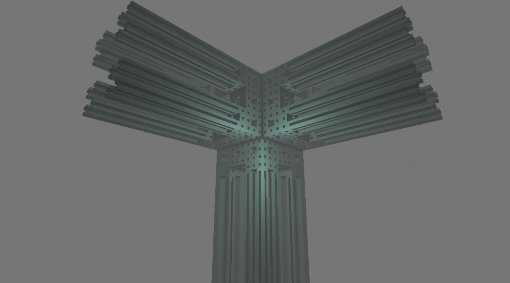
|
This is how the Menger sponge SDF looked upon first implementation. Only half of the Menger sponge was correctly rendering.
After looking online for solutions, we discovered an article that pointed out how the modulo function in HLSL functions
differently from the modulo function in some other shader languages. We replaced x % y in our definition with
x - y * floor(x / y) which fixed it. This differs from the default HLSL implementation of mod, x - y * trunc(x / y),
when the x / y term is negative.
|
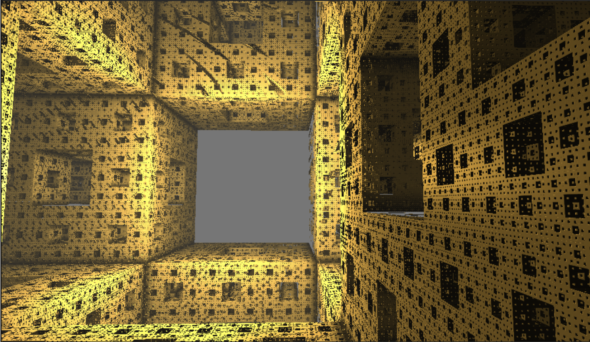
|
A high number of iterations on our fractal looks good when up close (as seen on the right of the above image), but creates significant aliasing when viewed from afar. This is due to the high frequency of the geometry relative to the low sampling frequency of far away parts of the scene. To fix this, we adapted the idea of mipmapping which we covered in class: we lowered the number of fractal iterations for rays that intersect further away from the camera. This keeps the detail of the scene up close and reduces aliasing for parts far away.
|
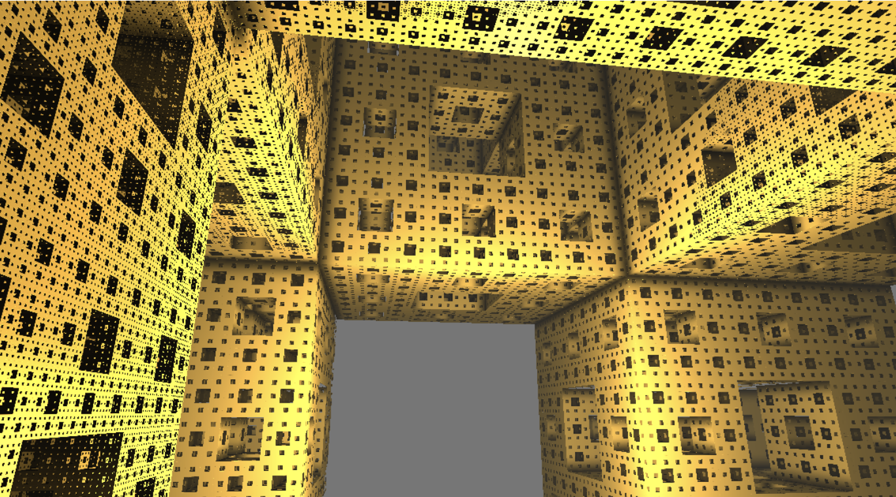
|
Throughout the project, we encountered many examples of code online that used many mathematical tricks to render SDFs in very few lines of code. We learned that it was more important to use a readable, well commented implementation with reasonably named identifiers rather than trying to use the shortest working code snippet that we found online. We also learned that programming solely in a shader came with many quirks that made debugging much more difficult than writing CPU-side code, and we relied more on our programming intuition to debug than actually looking at the state of the program.
Run our demo on your computer! (Windows & macOS)
Worked on implementing the ray marcher, researching and writing the first couple of SDFs, and helping implement and debug some of the HLSL shader code. Helped brainstorm how to reduce the aliasing effects seen on menger sponge. Worked on writing and finalizing the slides and reports and editing the deliverables.
Worked on implementing the ray marcher, understanding and writing basic SDFs, and writing some of the HLSL shader code. Note: I contracted COVID during RRR week, so I wasn’t able to contribute as much towards the advanced lighting/coloring effects that we implemented.
Worked on ray marcher, visual effects (fog, shadows, orbit trapping), SDFs, as well as Unity boilerplate code. Fixed major bugs with the renderer and the Menger sponge SDF. Found articles and examples online for SDFs and visual effects. Implemented first person camera controller. Also contributed to slides and final writeup.
Worked on visual effects (lighting, rotation, and animation effects) MengerSDF and initial rendering of the first couple basic SDFs, and final video rendering. Also worked on understanding and implementing the ray marcher algorithm as well.
website link: https://shreyaskompalli.github.io/final-fractals/final